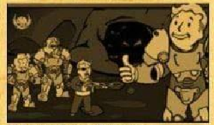
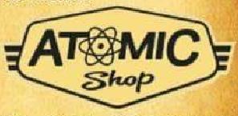
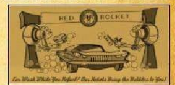

virginia occidental enero 27 de 2021
1ra edicion Valor 2 chapas
parcialmente nublado
posibles tormentas radioactivas
Este nuevo parche llega a Fallout 76 para ayudar a organizar mejor nuestro inventario entre otras cosas. A continuación las novedades mas importantes: Aumento del alijo, de 800 a 1200. Nuevas pestañas en el Pip-Boy, ahora armaduras y atuendos están por separado y comida y bebida están separadas de ayuda, lo cual agilizará mucho la búsqueda de nuestros objetos. También incorpora la pestaña "nuevo" donde encontraremos los últimos ítems recogidos en la sesión actual ordenados en el orden en el que se recogen se Nueva función "peso apilado" nos muestra la el peso total de un ítem que tengamos en cantidad (Tip: atentos con los items de ayuda y comida y bebida, que suelen ser los que mas se acumulan sin darse cuenta!).
También encontraremos mejoras en la interfaz de la vista en mapa de las maquinas vendedoras de jugadores. Ahora aparecen diferenciadas armas y armaduras por cantidad de estrellas legendarias, lo cual sin duda nos ahorrará muchos viajes rápidos.
A partir de esta actualización al completar una operación diaria alcanzando el rango de "Maestre" se garantizará la obtención de al menos un objeto de entre las recompensas poco comunes.
La conocida mision secundaria ha sido reactivada luego de haber solucionado los problemas con los datos tecnicos. Y ahora no solo pueden depositarse en Campamento Aventura, tambien son recibidos en Fuerte Atlas por la escrbriba Odessa Valdez de la Hermandad del acero, a quien vemos en la siguiente imagen:
Consejo diario: no olvides llevar siempre un poco de Rad-X por si te topas con una tormenta radioactiva.
En la tienda atomica se ha añadido una opcion para que muestre solo lo items que no hemos comprado para facilitar la navegacion y mejorar la visualizacion.
Esta semana encontraremos las siguientes novedades: Camara de habitaciones de refugio 1500 atomos conjunto sofas modulares 500 atomos servoarmadura de ranger del parque 1200 atomos ademas de muchas ofertas entre las que destacan letreros de quantum, old possum y pickaxe, conjunto de bar elegante, conjunto de barra de slocum's joe entre otras
No olvides reclamar la skin gratuita del "rompecorazones" para la llave grifa y participar del Evento "muero de amor" donde deberas completar desafios diarios y semanales que otorgan recompensas como tarteras, kits de reparacion, sobres de "perks" Y objetos de tiempo limitado (atuendo de RobCo, bungalo rustico y casco de pescador de langostas)